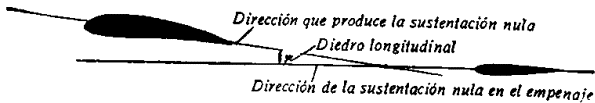
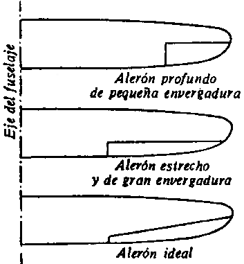
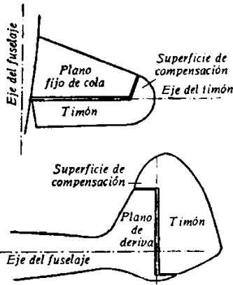
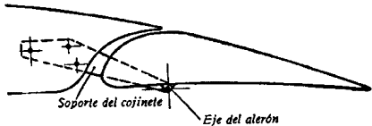
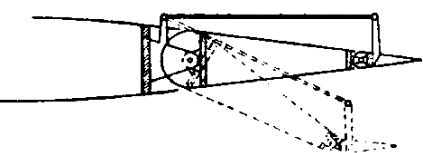

|
Inicio
Bibliografía
Noticias
Hangar
Actividades
Cursos
Comisión
Fotos
Videos
Ubicación
Contáctenos
Links
|
|
Manual del Vuelo a Vela
Wolf Hirth - 1942
El vuelo
por Heinz Kensche
1ª Sección:
Propiedades del vuelo
Se
comprende con el nombre de propiedades del vuelo el modo de conducirse el avión en el
aire en reposo o en movimiento, con los órganos de mando en la posición normal; la
capacidad de reaccionar, al actuar sobre esos órgano de mando; las presiones que se desarrollan
sobre los timones, así como la estabilidad estática y dinámica en los movimientos
alrededor de los tres ejes.
Antes de entrar en el estudio detallado de las propiedades
del vuelo, hay que decir algo todavía sobre las magnitudes que influyen de modo más
directo sobre la estabilidad, con objeto de poder deducir cuáles son las condiciones
precisas para obtener la estabilidad deseada, tanto alrededor del eje longitudinal como
del transversal y del vertical.
Se entiende por estabilidad de un avión su
capacidad para volver a la posición normal de vuelo cuando le han separado de ella
influencias perturbadoras exteriores a él y esto sin variar la posición de los órganos
de mando, es decir sin actuar sobre los timones.
Si el avión no vuelve después de la perturbación a su
posición primitiva sin actuar sobre los órganos de mando, sino que sigue volando en la
nueva posición, se dice que se trata de un caso de indiferencia. Si, por último, el
avión sigue la modificación de posición iniciada por la perturbación, se dice que hay
labilidad o inestabilidad.
Es claro que cierta estabilidad aparece como indispensable
para que el piloto no se vea obligado a corregir las menores perturbaciones. En un avión
inestable se verifica que pequeñas perturbaciones le sacan de su posición de vuelo y que
asimismo pequeños movimientos de los timones perturban la posición de equilibrio, y así
estos aviones reaccionan en general violentamente ante la maniobra de los mandos y tienen
tendencia a resultar mandados en exceso, aun con pequeños movimientos de los timones, por
lo que el volar en tales aparatos resulta agotador para el piloto.
Estabilidad longitudinal estática
Una
condición inexcusable para cualquier clase de avión es la de tener estabilidad alrededor
del eje transversal, es decir estabilidad longitudinal. Esto es: si se modifica, por una
perturbación, la inclinación longitudinal y por consiguiente el ángulo de ataque, las
nuevas reacciones del aire deben tratar de hacer volver al avión a su primitiva posición
y esto sin maniobrar el timón de altura.
Pasemos ahora a considerar sucesivamente las magnitudes
que influyen sobre la estabilidad longitudinal del avión, examinando los fenómenos sin
emplear las complicadas ecuaciones de estabilidad.
Para obtener el momento que ha de oponerse a una
variación del ángulo de ataque hay que atender a la magnitud de la superficie del plano
fijo de cola; a la distancia de este plano al centro de gravedad del aparato y a la
capacidad que tenga el mencionado plano de producir mayor reacción del aire que en la
posición primitiva, cuando al actuar sobre él se modifique su ángulo de ataque. La
última circunstancia es dependiente, en esencia, de la forma del contorno y del
alargamiento del plano, y de tal modo, que cuanto mejor sea este alargamiento tanto mayor
será el crecimiento del coeficiente de sustentación al variar el ángulo de ataque. Sin
embargo, el modo más eficaz de obtener un valor grande del momento recuperador es
aumentar la superficie del plano de cola y su distancia al centro de gravedad.
En el proyecto de un avión es posible fijar por el
cálculo, hasta un cierto grado de exactitud, la intensidad de la estabilidad
longitudinal, determinando la longitud del fuselaje o sea la distancia del plano fijo de
cola al centro de gravedad, así como su superficie, partiendo del conocimiento del ala
del avión.
Otra influencia también importante, que solamente puede
ser tenida en cuenta parcialmente en la construcción, es la posición del centro de
gravedad, la cual durante el funcionamiento del avión puede variar de modo importante por
las diferencias de peso de unos pilotos a otros. El constructor dispondrá el centro de
gravedad partiendo del peso normal del piloto, de modo que sea necesaria la mínima
reacción del aire sobre el plano fijo de cola para mantener el equilibrio de la posición
de vuelo, en el vuelo normal de planeo, y de este modo no será excesiva la reacción
sustentadora necesaria y, con ello, tampoco demasiado grande la resistencia inducida a que
dé lugar el mencionado plano fijo de cola; sin dejar de tener en cuenta, claro es, que al
variar el peso del piloto siga habiendo aún estabilidad suficiente.
En los veleros actuales el sitio del piloto está
generalmente delante de las alas, de modo que un piloto más pesado dará lugar a un
avión cargado de pico y un piloto más ligero a un avión cargado de cola, y la fórmula
de la variación de momento del ala, al variar el ángulo de posición de la misma, hace
ver que la estabilidad crece al avanzar el centro de gravedad y disminuye cuando éste
retrocede. El valor máximo del desplazamiento admisible del centro de gravedad en vuelo,
se fija en los ensayos de avión, mediante la adición de lastre en posiciones anterior y
posterior.
Si al hacer los ensayos de vuelo se ve que no pueden
admitirse más que determinados desplazamientos del centro de gravedad, será preciso que
cuando el piloto sea de menos peso que el normal se ponga lastre en la proa, mientras que
si el piloto es más pesado se ponga lastre en la popa, para no pasar nunca de los
desplazamientos admisibles del centro de gravedad.
Los aparatos que se emplean actualmente están construidos
de modo que permiten un desplazamiento del centro de gravedad de 10 cm. aproximadamente.
Por otro lado, si se atiende a que, dada una determinada diferencia de peso de pilotos, el
desplazamiento que resulta para el centro de gravedad depende en gran medida de la
relación entre el peso del avión y el del piloto y de la distancia al ala del punto de
aplicación de éste, resulta que los aviones ligeros y aquellos en los que el piloto va
muy delante respecto al ala serán desde el punto de vista de la estabilidad muy sensibles
a las variaciones de peso de los pilotos. Las circunstancias expuestas son la causa de que
los aparatos de escuela vayan provistos actualmente de un reglaje de peso.
Equilibrio
La
expresión usada muchas veces cuando se habla de las propiedades del vuelo de «
equilibrio» o de « presión dinámica de equilibrio » se refiere a aquel estado de
vuelo o velocidad correspondiente, con las cuales la palanca de mando está completamente
suelta. La definición correcta de este estado sería, por consiguiente, « estado de
equilibrio con palanca libre ». La acepción exacta de la palabra «equilibrio » es la
de representar cualquier situación estacionaria de vuelo, aunque en ella se obre con una
cierta acción sobre la palanca de mando, tanto tirando de ella como llevándola hacia
adelante. Naturalmente que para que puedan existir diversas situaciones estacionarias de
vuelo, por tanto a diversas velocidades, hay que suponer desde luego que existe
estabilidad.
Es obligado que con la velocidad normal de vuelo no sea
preciso actuar sobre la palanca de mando y, por tanto, que ésta pueda soltarse en vuelo,
es decir que se desea un estado de equilibrio con palanca libre durante la velocidad
normal de vuelo.

Fig. 18. Ángulo de posición del empenaje
respecto al ala o diedro longitudinal
Para explicar la variación de las acciones necesarias sobre la
palanca de mando cuando varía la posición del centro de gravedad, se van a exponer las
siguientes razones:
Con una posición dada del centro de gravedad es necesaria
cierta inclinación del empenaje respecto al ala, es decir, esos elementos deben formar
entre sí un cierto ángulo j (fig. 18) para conseguir el equilibrio con la velocidad normal
(Para comprender bien lo que sigue es conveniente decir que se llama empenaje al conjunto
de todos los órganos que van en la cola del avión para conseguir su equilibrio o el
mando, distinguiéndose el empenaje horizontal y el vertical según que se trate de
equilibrar movimientos en el plano vertical o en el horizontal. Cada clase de empenaje
consta de dos partes: parte fija y móvil: la parte fija del empenaje horizontal se llama
plano fijo de cola, y la parte fija vertical, plano de deriva: las partes móviles son los
timones de altura y de dirección, respectivamente. - N. del T.). Si el centro de
gravedad avanza, debe aumentar el ángulo formado por el plano de cola y el ala, lo que se
consigue tirando de la palanca, de modo que para mantener el mismo ángulo de inclinación
longitudinal del avión es necesario tirar continuamente de ella, para lo que será
preciso una acción constante, aunque sea pequeña. Lo contrario ocurrirá con pilotos
menos pesados, es decir cuando el centro de gravedad se retrase, o sea con avión cargado
de cola, que será preciso empujar la palanca para obtener un ángulo menor entre el
timón y el ala. Por lo tanto, si se dispone de reglaje de peso para llevar siempre el
centro de gravedad casi en la misma posición, podrá volar el piloto muy descansado. Otro
camino para conseguir evitar la acción continua sobre la palanca, pero no la influencia
sobre la estabilidad, es el reglaje por variación del ángulo de posición del plano fijo
de cola, pues es claro que una pequeña modificación de ese ángulo dará lugar al mismo
efecto que una maniobra del timón y la acción del aire conseguida de este modo
descargará la acción del timón y, por tanto, la de la palanca.
Para completar lo expuesto, es preciso decir aún algo
acerca de la influencia de la forma del ala sobre la estabilidad longitudinal. Las alas en
flecha, con un alabeo apropiado son, a causa de sus especiales propiedades, estables por
sí mismas, debido a la variación de distribución de la sustentación a lo largo de la
envergadura (Se entiende por alas en flecha aquella alas cuyes ejes forman un ángulo
agudo hacia atrás con el eje del fuselaje, en lugar de ser normales a él, como lo son
las alas rectas. Alabeo del ala es la disposición de ésta con la que al ángulo de
posición varia a lo largo del ala, siendo ésta como retorcida y precisamente
disminuyendo el ángulo de posición hacia los márgenes. En la publicación citada de la
casa LABOR, El hombre vuela, pueden verse
explicaciones más detalladas sobre el particular.- N. del T.). En estas alas, las
regiones marginales obran como el empenaje de altura en los aviones normales, produciendo
un momento recuperador de valor en proporción a la variación del ángulo de ataque,
teniendo así acción estabilizadora para los movimientos alrededor del eje transversal
del avión y, por tanto, los aviones con alas en flecha marcada y buen alabeo, teniendo
alas por sí mismas estables, pueden volar sin empenaje de altura, mientras que aviones
con débil flecha, en los que las alas contribuyen sólo parcialmente a la estabilidad,
exigen un empenaje menor que los aparatos de alas rectas.
Estabilidad longitudinal dinámica
Si en la
estabilidad longitudinal estática se atiende a la existencia de fuerzas y momentos
recuperadores que aparezcan al salir el avión de la posición de vuelo considerada, se
define la estabilidad longitudinal dinámica por la naturaleza del movimiento que toma el
avión a consecuencia de una perturbación. Un avión es dinámicamente estable si tiene
la propiedad de volver a su primitiva posición quedando en ella, en reposo, sin necesidad
de emplear los mandos, cuando después de una perturbación que modifique su inclinación
longitudinal o su velocidad toma un movimiento de oscilación amortiguado alrededor de su
posición normal.
Es fundamental en la construcción de veleros que el
amortiguamiento de los movimientos alrededor del eje transversal sea pequeño, y por esta
razón el velero tiene oscilaciones al presentarse una perturbación que en los aparatos
dinámicamente estables con suficiente amortiguamiento son, como se ha dicho, de pequeña
amplitud y, poco a poco, van siendo cada vez menores, mientras que en los indiferentes, la
amplitud de las oscilaciones se mantiene la misma y en los dinámicamente inestables, por
el contrario, van siendo las oscilaciones cada vez de mayor amplitud hasta llegar a la
completa pérdida de equilibrio v entrar en caída desordenada. La duración de una
oscilación completa es, en general, de veinte a treinta segundos y a consecuencia de esta
larga duración no puede decirse que sea peligroso un avión dinámicamente inestable,
puesto que las oscilaciones podrán ser atajadas por el piloto antes de que el movimiento
pueda considerarse establecido. Casi todos los veleros actualmente en uso no pueden
considerarse como ideales desde el punto de vista de la estabilidad dinámica.
Particularizando, puede decirse que la estabilidad o inestabilidad dinámicas se
manifiesta, en los veleros de hoy, del siguiente modo:
1.º Al presentarse una pequeña perturbación de la
velocidad inicial, de valor aproximado un 10 %, y abandonando y volviendo a tomar la
palanca de mando en la primitiva posición, han tenido efecto oscilaciones tales que el
avión después de cinco de ellas entra en caída desordenada. Este caso se considera como
inadmisible y un avión que lo presente al ensayarle en vuelo es rechazado.
2.º Con la misma perturbación y maniobra de la palanca,
las oscilaciones se mantienen con la misma amplitud o aumentan tan lentamente que la
caída desordenada sólo tiene efecto después de veinte oscilaciones. Este caso se
considera como admisible.
3.º El aparato, después de la perturbación supuesta,
tiene oscilaciones de amplitud creciente, pero hasta un cierto límite, aunque durante la
oscilación crezca la velocidad hasta el doble de la normal. Este caso se considera como
normal, porque en él se llega a un estado de oscilación en cierto modo estable.
4.º El avión oscila al presentarse una perturbación,
pero el aumento de la amplitud depende de la magnitud de la perturbación, llegándose a
la caída desordenada con las fuertes perturbaciones. Según sea la magnitud de la
perturbación que da lugar a la caída desordenada, así se considera este caso como
admisible o no.
Es claro que la inestabilidad dinámica no llega a hacerse
sensible en el vuelo si se pone atención, pues las oscilaciones se detienen en seguida
con los mandos. Sin embargo, las circunstancias no son las mismas en los aparatos de
escuela, pues muchos alumnos cogen la palanca férreamente hasta romperla, especialmente
si en la oscilación descendente hay peligro de tocar el suelo; por lo tanto, en los
aparatos de escuela debe huirse de la inestabilidad dinámica.
Estabilidad de dirección
Se dice
que hay estabilidad de dirección cuando, después de una perturbación del avión
alrededor del eje vertical, el aparato, sin actuar sobre el timón, vuelve otra vez por si
mismo a la posición del vuelo recto, sin que sea necesario indispensablemente el que la
nueva dirección de vuelo sea exactamente la anterior. El término usado antes de
estabilidad de ruta no está justificado físicamente, puesto que la vuelta a la ruta
primitiva no es posible y aun tampoco se exige.
Si el avión signe volando en la posición oblicua
producida por la perturbación o esta oblicuidad va aumentando, se dice que el avión es
indiferente o inestable en cuanto a dirección. Para apreciar el grado de estabilidad de
dirección hay que atender a la magnitud del empenaje vertical y de la proyección lateral
del fuselaje. Si la mayor parte de la superficie interesante de la proyección lateral del
fuselaje, incluido en ella el empenaje vertical, está detrás del centro de gravedad del
avión o, dicho más exactamente, si el centro de las presiones producidas por la
corriente del aire que sople lateralmente sobre el fuselaje y el empenaje vertical está
situado detrás del centro de gravedad, entonces existe estabilidad de dirección. Se ve
que se podrá modificar la estabilidad de dirección variando la magnitud de la superficie
del empenaje vertical y también hay que observar que la parte que el ala misma influye
sobre esta estabilidad puede variarse actuando sobre la forma en V del ala (Para una
explicación mas extensa de este punto, véase la obra citada, El hombre vuela. - N.
del T.).
Estabilidad lateral
Las
propiedades de estabilidad lateral de un avión están definidas por el modo de conducirse
ante las perturbaciones del vuelo que ocasionen movimientos alrededor de los ejes vertical
y longitudinal, habiéndose expuesto ya lo relativo a movimientos alrededor del eje
vertical al tratar de la estabilidad de dirección. Las circunstancias ahora se presentan
claras, pues el movimiento de resbalamiento puede considerarse independientemente del de
balance; pero un examen del movimiento de balance por sí solo no es posible, porque si el
plano de simetría del avión sale de su posición vertical se produce siempre al mismo
tiempo un movimiento de resbalamiento por los momentos de las acciones recuperadoras
respecto al eje longitudinal. Estos momentos son los que intervienen en la « estabilidad
transversal » y nacen, como en la estabilidad de dirección, con la existencia de un
ángulo de resbalamiento. El acoplamiento de la « estabilidad transversal », de la que
no se puede tratar en su sentido estricto, con la estabilidad de dirección es lo que
constituye la llamada estabilidad lateral. La estabilidad de estados de equilibrio, desde
ese punto de vista, debe ser conseguida no solamente por la existencia de las
estabilidades de dirección y transversal, sino también por la adecuada relación entre
ellas.
Aunque, como se ha dicho, no existe una sola estabilidad
transversal, se debe hacer ver la existencia de momentos estabilizadores alrededor del eje
longitudinal producidos en el movimiento de resbalar, y que pueden ser designados
brevemente como momentos de « estabilidad transversal ».
El medio más eficaz para conseguir una buena estabilidad
transversal es el empleo de ala en forma de V o en diedro; entonces el ala que resulta
inclinada hacia abajo, en el movimiento de resbalamiento que en la perturbación
transversal toma el avión y que relativamente a la corriente aérea resulta acelerada,
recibe esa corriente con un ángulo de ataque mayor, lo que, en definitiva, origina una
acción recuperadora. Al mismo tiempo el aumento de las fuerzas tangenciales da lugar a
momentos estabilizadores alrededor del eje vertical, como ya se dijo al tratar de la
estabilidad de dirección. Otro medio que es también eficaz, en parte, sobre la
estabilidad de dirección es el alabeo del ala, con el fin de obtener distribución más
perfecta de la sustentación hacia el centro del ala, pues la estabilidad crece al ser
menor el coeficiente de sustentación de las regiones extremas de las alas. Se ve,
además, que la estabilidad transversal, a consecuencia de su acoplamiento con la
estabilidad de dirección, disminuye cuando aumenta la envergadura.
Según demuestra el estado a que hoy se ha llegado del
conocimiento del asunto, el conseguir una estabilidad transversal suficiente no puede
hacerse sino a expensas de perder en características, por lo que en general se considera
bastante si, a lo menos, se llega a la indiferencia en cuanto a inclinación transversal,
aunque la inestabilidad transversal fatiga bastante al piloto, si bien no conduce, en la
misma medida que la longitudinal, a posiciones de vuelo peligrosas.
Para completar las explicaciones sobre la estabilidad
lateral, especialmente sobre su efecto en el vuelo en curva, conviene fijar, desde luego,
las propiedades de este vuelo.
Para dar lugar a un movimiento del avión alrededor de su
eje vertical, es decir, hacerle describir una curva horizontal, es preciso actuar sobre el
timón de dirección. Entonces, a consecuencia del movimiento de rotación ocasionado, el
ala exterior tiene mayor velocidad y menor ángulo de ataque que el ala interior y, según
que predomine uno u otro efecto, así recibirá una sustentación que excederá en mucho o
en poco a la del ala interior, hasta que el avión tome una posición oblicua en el
sentido de la curva, por el momento positivo de escoramiento que se ha producido. Se
consigue, pues, el estado ideal en la curva si se establece la inclinación transversal
necesaria, según el radio de la curva, sin intervención del mando transversal o si esa
posición resulta de mandar transversalmente, de acuerdo con la curva descrita; en el
primer caso, se dice que hay estado indiferente; en el segundo, que hay estabilidad
lateral.
Sin embargo, si predomina mucho la sustentación del ala
exterior respecto a la de la interior, es preciso mandar transversalmente al avión en
sentido contrario, hasta conseguir la inclinación correcta respecto a la curva volada, a
lo que hay que añadir un mando sobre la palanca que resulta también necesario, todo lo
cual fatiga mucho al piloto, diciéndose, en este caso, que hay inestabilidad lateral. Si
un tal avión inestable se vuela en curva sin contramando transversal, se llega a la
llamada inversión de mando; es decir, que a pesar de tirar de la palanca la curva es cada
vez más ceñida, hasta llegar a estar el ala vertical con la correspondiente inclinación
descendente del eje del fuselaje, de modo que se produce una gran pérdida de altura con
gran aumento de la velocidad y aceleración, diciéndose entonces que el avión cae en
espiral. En el vuelo sin visibilidad en las nubes, que es muy difícil por ignorar el
piloto la verdadera posición de su avión, ya que falta el horizonte, puede dar lugar
esta caída en espiral a velocidad y aceleración peligrosas para la resistencia del
aparato y esto puede traer como consecuencia la rotura de las alas, aun prescindiendo del
hecho de que un piloto poco ejercitado no está tranquilo ante una caída en espiral con
un avión inestable, porque el mando para salir de un vuelo algo seguido de caída en
espiral puede fácilmente llegar a ser excesivo. Las propiedades de la caída en espiral
pueden modificarse también mediante un alabeo apropiado del ala, pues su estabilidad,
como la estabilidad transversal misma, crecen cuanto más marcado sea el alabeo del ala.
En la actualidad no existe un velero que sea claramente
estable en sentido lateral, y a este respecto los veleros están en franca inferioridad
con relación a los aviones de motor, a consecuencia de su gran envergadura. Algunos tipos
son indiferentes en cuanto a la estabilidad lateral, hasta llegar a viradas cuya
inclinación correcta correspondiente sea de 30º, siendo inestables para mayores
inclinaciones, y esto es lo máximo que en este sentido ha podido conseguirse. En general,
se considera satisfactorio un velero si volando en curva estacionaria es sólo necesario
un contramando transversal que deje disponible todavía una reserva de mando en ese
sentido, la cual permita salir rápidamente de la curva si el piloto lo desea. Las fuerzas
necesarias para el contramando pueden mantenerse suficientemente pequeñas por una
apropiada disposición diferencial de ese contramando.
Eficacia de los timones
Además de
conseguir la estabilidad de dirección, el mando lateral tiene otros objetos. En primer
lugar, debe permitir en unión de los timones transversales la realización de rápidas
viradas, y en este sentido se presenta otra propiedad del avión, desde el punto de vista
del mando transversal, cuya influencia puede compensarse, hasta cierto punto, con el mando
de dirección.
Si se ejecuta una virada con el mando transversal (lo que
no es en absoluto rechazable, desde el punto de vista del pilotaje), o, al menos, se ayuda
a la virada con ese mando, resulta que en el ala a la que corresponde bajar el alerón de
mando de alabeo crece la reacción sustentadora del aire, mientras que en el ala opuesta
ocurre lo contrario, y se ha visto en el capitulo anterior que al crecer la sustentación
crece también la resistencia inducida, y que disminuye en el caso opuesto; esto quiere
decir, en nuestro caso, que el ala que al describir la curva debe retrasarse, tendrá una
aceleración a consecuencia de la disminución de la resistencia, mientras que el ala
exterior que debería adelantarse experimentará un frenado a consecuencia del aumento de
la resistencia inducida y se retrasará, y entonces el momento resultante, contrario a la
realización de la virada, deberá compensarse con el de una fuerza sobre el timón de
dirección. Por lo tanto, si se manda una virada con el mando transversal, el de
dirección ha de intervenir como auxiliar, y cuanto mayor sea el timón de dirección,
más fácil será compensar el contramando de virada producido por la resistencia inducida
(Este efecto se llama « arrastre de alerón ». - N. del T.). También debe
decirse en este lugar que el momento de contravirada de la resistencia inducida puede
reducirse con el empleo de un mando transversal diferencial, haciendo que una determinada
maniobra de la palanca de mando dé lugar a un movimiento de los timones transversales, de
tal género que sea mayor la carrera del alerón que sube que la del que baja (El mando
transversal dispuesto de este modo se llama de « alerones diferenciales ». - N. del
T.).
La magnitud del timón de dirección tiene influencia no
sólo sobre el estado de vuelo que se ha examinado, sino también sobre el valor del
ángulo de derrape. El derrapar, el llamado « side-slip » (Expresión inglesa que quiere
decir « resbalamiento lateral »: en español se dice « derrapar ». - N. del T.),
puede decirse bienvenido para un aparato, porque por medio de él se facilita el tomar
tierra en un punto obligado, lo cual es de gran importancia en terrenos difíciles y esto
es así porque el derrape empeora el ángulo de planeo: cuanto mayor es el ángulo de
derrape, es decir, el ángulo que forma el eje del fuselaje con la dirección de vuelo, tanto peor es el ángulo de planeo, a consecuencia
del aumento de resistencia que supone recibir la corriente de aire lateralmente sobre el
fuselaje.
Del mismo modo que la magnitud del empenaje vertical,
especialmente la del timón de dirección, está relacionada con las posiciones de vuelo
que se desean conseguir, igualmente ocurre con la magnitud de los timones transversales,
que se fijan con análogas exigencias. La más importante de ellas es ahora la de que
exista rapidez de movimientos alrededor del eje longitudinal del aparato, es decir
manejabilidad para escorar, la cual es una de las circunstancias más importantes para
juzgar sobre las propiedades de vuelo que tiene un velero y que es de gran utilidad cuando
es preciso actuar sobre el mando transversal en las viradas que exigen los térmicos o en
la proximidad del suelo. Y no solamente la magnitud, sino también la forma de los
alerones y su disposición en las alas tienen influencia sobre el mando de escoramiento.
Alerones de mucha profundidad útil, a igual superficie, dan un momento de escoramiento
menor que los alerones menos profundos y más largos, ya que las ranuras que han de
existir necesariamente entre los alerones y el ala producen en el segundo caso menor
reducción que en el primero de las reacciones del aire y, con ellas, del momento
actuante. Por otro lado, también hay que observar que el momento de escoramiento es tanto
mayor cuanto mayor es la distancia de los alerones al eje del fuselaje. El alerón ideal
será, por tanto, largo y estrecho, y con la menor profundidad del lado interior y la
mayor hacia el exterior (fig. 19).
 Fig. 19. Formas
de alerones
La
circunstancia que ha de servir de base para fijar el grado de eficacia del timón de
altura es la que se deriva de la necesidad de que en el aterrizaje o al corregir
posiciones de vuelo no voluntarias sea posible obtener rápidos cambios del ángulo de
ataque; además, debe también atenderse a que mediante su acción permita la salida de la
barrena con la suficiente lentitud en los aparatos en los que se ejecute ésta
voluntariamente.
El remolque con torno, que desde el año 1931 se ha
extendido mucho, exige también un grado de eficacia suficiente en el timón de altura
para poder obtener la inclinación necesaria en el aparato durante la zona de vuelo
ascendente ; por este motivo, conviene decir algo más sobre los efectos del timón de
altura. Se sabe que muchos aparatos empiezan a oscilar durante el remolque por torno
cuando están en vuelo ascendente, y esa oscilación constituye una variación periódica
del ángulo de ataque, que resulta desagradable tanto para el conductor del torno como
para el piloto, especialmente para este último, y que para los principiantes resulta de
muy difícil compensación.
La aparición de estos fenómenos es debida a que en el
empenaje de altura ocurren los fenómenos siguientes:
Con objeto de obtener el encabritamiento necesario en el
aparato para el vuelo ascendente, el piloto tira de la palanca y sigue tirando hasta que
ya no es posible obtener mayor reacción en ese empenaje que compense la tracción del
cable. El ángulo de ataque grande del empenaje, a consecuencia de la maniobra del timón,
da lugar a la dislocación de la corriente aérea que recibe este órgano y esto trae como
consecuencia que el aparato pique, con lo que la corriente de aire se normaliza en el
empenaje y produce nueva reacción, de valor suficiente para encabritar el aparato, y otra
vez se repiten los mismos fenómenos y así con carácter periódico.
Si se tiene un timón de altura de suficiente magnitud
para que produzca la reacción necesaria en el mando sin necesidad de una gran carrera,
entonces no se llegará al ángulo de ataque crítico que produce la dislocación de la
corriente, y el aparato tendrá una ascensión tranquila durante el remolque con el cable.
Además de llenar las condiciones de manejabilidad
suficiente alrededor de los tres ejes, es condición esencial de un avión la de tener la
armonía necesaria entre los efectos de los mandos: un piloto se encuentra tanto más a
gusto en un avión cuanto éste reacciona más regularmente a la acción de todos los
mandos, de modo que igual maniobra de palanca que de pedales dé lugar a efectos
correspondientes, también iguales.
Fuerzas en los timones
Hemos
hablado muchas veces de las fuerzas necesarias en la maniobra y hay que decir en este
aspecto que al piloto le es agradable tener que emplear cierta fuerza para mandar.
Sin embargo, si estas fuerzas llegan a ser
demasiado grandes podrán cansar cuando se hayan de emplear mucho tiempo y entonces mermar
el placer del vuelo y la energía del piloto, que le será necesaria para llevar a cabo un
vuelo de marca, como, por ejemplo, en un concurso. Generalmente, se fijan las fuerzas de
mando de modo que sólo el peso de los miembros respectivos, brazos y piernas, sean
suficientes para la maniobra correspondiente, pero cuidando de que estas fuerzas no sean
necesarias para vencer efectos de rozamiento en los órganos de mando, sino para
contrarrestar  de un modo efectivo
las acciones del aire sobre los timones. El piloto nota muy bien, en cada caso, si se
trata de vencer rozamientos o acciones del aire, y el sentir en la palanca y en el pedal
la presión del aire sobre los timones da al piloto el sentimiento de una unión corpórea
con el aparato y, en cierto modo, una medida de los esfuerzos que en las diferentes
acciones y casos de mandos ha de soportar aquél. Las fuerzas de mando pueden hacerse
bastante independientes de la magnitud absoluta del timón, dándole una forma hábilmente
concebida.
Fig. 20. Timones compensados de altura
y de dirección
En los
primeros tiempos, los timones se hacían poco más o menos del siguiente modo: se montaban
costillas que iban hacia atrás del larguero propiamente dicho ; el borde de salida se
constituía por un listón; todo se entelaba con lienzo y el timón así acabado era
provisto de charnelas fijadas al plano fijo o de cola o bien sobre las alas, según el
caso. La ranura entre los planos fijos o las alas y los timones, especialmente si se
trataba de hacer una construcción esmerada, se recubría también cuidadosamente.
Entonces se conseguía aligerar el esfuerzo necesario en la maniobra de los timones por
medio de los llamados timones compensados, en los que parte de la superficie del timón
sobresale del eje de giro (fig. 20). (Con estos timones la acción del aire que hay que
vencer en el mando es sólo la diferencia entre las acciones del aire sobre las dos partes
de superficie a un lado y otro del eje, pudiendo de este modo hacerse todo lo pequeña que
se desee, pero dejándola siempre suficiente para que el piloto sienta su avión, como
antes decía el autor. - N. del T.).
 Fig. 21. Alerón de compensación interna
Este
método de compensación de las acciones del aire se sigue empleando hoy en los veleros
para los timones de altura y de dirección, mientras que en los alerones se emplea ya
desde hace algún tiempo la compensación interna, la cual consiste en montar el eje de
rotación del alerón dentro de su superficie, con lo que resulta parte de ella delante
del eje, dando lugar a una disminución del momento de maniobra necesario y, por lo tanto,
de la fuerza que es preciso aplicar (fig. 21). 
Fig.
22. Timón Flettner
Otro
método de compensar las acciones del aire es el empleo de los llamados alerones de
Flettner, los cuales se accionan por el
mismo timón y producen una disminución del momento de maniobra, por tener carrera de
sentido opuesto a la del timón principal (fig. 22).
Lo que se dijo antes sobre la armonía entre los efectos
de los timones es aplicable también a la relación entre las fuerzas necesarias para la
maniobra, así como respecto a los recorridos de mando necesarios. En resumen, se puede
decir que entre los efectos de los timones, los recorridos de mando y las fuerzas de
maniobra necesarias debe haber no una relación numérica, sino una proporción armónica
en cuanto a las sensaciones, de modo que la construcción sea proporcionada a los sentidos
y esfuerzos apropiados de un aviador de condiciones medias.
Barrena
Si por
maniobra sucesiva del timón de altura se va aumentando el ángulo de ataque de las alas
con el fin de obtener una pequeña velocidad de descenso, se llega fácilmente, en
especial si se trata de pilotos noveles, al peligro de entrar en la posición critica de
vuelo, en la cual, a consecuencia de la pequeña velocidad relativa, disminuye mucho la
eficacia del mando transversal. Si un aparato que llega a esa situación toma un
escoramiento del que no puede sacarse por el mando transversal, entonces resbala sobre el
ala, cae « resbalando ». Numerosos accidentes por resbalamiento de ala causada por la
posición crítica de vuelo, cerca del suelo, en la que no hay altura suficiente para
recuperar la posición normal del avión, son testimonio de lo peligroso de ese estado de
vuelo.
Si se sigue aumentando la carrera del timón de altura y
con ella el ángulo de ataque, se llega a la dislocación de la corriente en toda el ala:
la sustentación disminuye bruscamente, el avión cae, por lo tanto, inclinándose de pico
y empieza a girar alrededor de su eje vertical, puesto que un ala en estado crítico tiene
la propiedad de la autorrotación; el avión entra en barrena con pérdida grande de
altura, a pesar de tener el mando de altura en acción máxima.
El valor de la barrena en los veleros es hoy muy
discutido. Los representantes de una tendencia exigen que el velero sea capaz de la
barrena, dando las razones de que con ella o se puede evitar el ser aspirado
involuntariamente por una nube, o se puede salir de una nube relativamente sin peligro,
cuando en el vuelo sin visibilidad se haya perdido la orientación sobre la verdadera
posición del avión y no se esté en condiciones de recuperar, con vuelo ciego, la
posición correcta. Los representantes de la otra tendencia renuncian fundamentalmente a
la barrena, que consideran como un vuelo peligroso en si mismo y exigen por ello al avión
tal estabilidad propia con mandos sueltos y fijos, que el avión con tiempo de turbulencia
y, sobre todo, en vuelo sin visibilidad no puede llegar a situaciones en las que se pierda
el mando. Los dos modos de opinar son fundados y, sin embargo, como la segunda tendencia
lleva aparejada una merma en las características del aparato y supone exigencias muy
difíciles de llenar por el constructor, se toma el camino marcado por la primera
tendencia. Ciertamente, la barrena, especialmente para pilotos poco ejercitados, es, hasta
cierto punto, una maniobra peligrosa, puesto que es un movimiento propio del velero no
mandado. Sin embargo, se puede hacer que la barrena resulte completamente desprovista de
peligro, mediante las oportunas medidas tomadas en la construcción del velero, de las
cuales se va a tratar a continuación.
Hemos visto al tratar de la estabilidad transversal que
puede aumentarse mediante un alabeo negativo del ala. El alabeo del ala o su torsión es
necesario por las siguientes razones:
Los veleros actuales, en su mayoría, con motivo de elevar
sus características y mejorar sus propiedades de vuelo, no tienen alas rectangulares,
sino alas más o menos afiladas hacia los márgenes. Si un ala de este género recibe una
corriente de aire bajo un cierto ángulo de ataque, se origina, como se ha visto, una
sustentación, pero, además, se presenta un fenómeno del que todavía no se ha hablado:
las zonas del ala próximas al fuselaje, que tienen mayor profundidad, inducen en las
zonas inmediatas de menos profundidad del exterior una circulación suplementaria, la que
tiene igual valor para un mismo aumento dado del ángulo de posición. Las zonas
marginales del ala están así en condiciones de producir una mayor sustentación: están
bajo un ángulo de ataque «inducido» mayor que el correspondiente a las zonas del ala
próximas al fuselaje, y puesto que un perfil de ala sólo puede producir sustentación
hasta un determinado ángulo de ataque, resultará que, bajo un cierto valor general de
ese ángulo, la corriente aérea empieza a dislocarse en las zonas marginales del ala,
mientras que sigue adherida al perfil en las zonas interiores, en las que el ángulo de
ataque permanece más pequeño. La dislocación de la corriente en las zonas exteriores
del ala da lugar al fenómeno ya mencionado de la autorrotación. Mediante un cálculo
adecuado de la repartición de la sustentación en un ala, se puede llegar a un tipo de
torsión tal, que el máximo del coeficiente de sustentación del perfil tenga efecto
simultáneamente en todas las zonas del ala. Sin embargo, en la mayor parte de los casos,
se llega sólo en la torsión al punto de que con los grandes ángulos de ataque se
disloque la corriente antes en el interior que en el exterior del ala.
Esta medida tiene grandes ventajas desde el punto de vista
del pilotaje. Por un lado, el piloto se da cuenta de la dislocación de la corriente,
porque el empenaje, que se encuentra en la zona de los torbellinos producidos en la
región central donde se ha producido la corriente desordenada, empieza a estar agitado y
se producen oscilaciones de balance de la cola del fuselaje, las cuales las percibe muy
bien el piloto; además, esta sensación de aviso no llega con retraso, puesto que el
avión es todavía capaz de volar con la acción de la corriente que aun permanece
adherida al perfil en las zonas extremas del ala, si bien se ha producido ya cierta
disminución de la sustentación; además, el avión tiene todavía mando transversal,
porque los alerones están en una zona de corriente sana y son aún eficaces. Si el
ángulo general de ataque sigue aumentando, el avión entra en barrena. Se puede facilitar
la dislocación general de la corriente mediante una maniobra hacia abajo del alerón, con
lo que se aumenta el ángulo de ataque de la semiala correspondiente, y el avión resbala
entonces de costado por la disminución de sustentación producida en esa semiala, y
precisamente hacia el lado contrario de la carrera del alerón que aun sigue en la zona
sana de la corriente. Con esta maniobra del mando transversal y, como se comprende,
también por la ayuda del mando lateral, puede mandarse el sentido de rotación de la
barrena en su período de iniciación.
La transición del avión del vuelo encabritado a la
barrena tiene efecto suavemente en aparatos con alas suficientemente alabeadas, en las que
la corriente se rompe siguiendo el proceso descrito. Con alas en las que la corriente se
disloca simultáneamente en toda su longitud, o en las que la dislocación empiece por el
exterior, el paso a la barrena tiene efecto bruscamente.
Las propiedades de la barrena estacionaria de un avión
dependen no sólo de la forma de las alas, sino también de la forma y magnitud del
empenaje de dirección y de la proyección lateral del fuselaje, todo lo cual influye
sobre el ángulo de derrape durante la barrena, sobre el ángulo bajo el cual el avión
recibe lateralmente la corriente aérea, de dentro o de fuera, medido ese ángulo respecto
al eje longitudinal del fuselaje. En los ensayos sobre la barrena llevados a cabo con
aviones de motor fuera de Alemania y en el Instituto alemán de Navegación aérea se ha
llegado a determinar que las dificultades para salir de la barrena se aminoran si el
fuselaje recibe la corriente aérea de delante o de dentro. Si, por el contrario, el
fuselaje recibe la corriente aérea de fuera, la salida de la barrena es muy difícil. Sin
embargo, los hechos de experiencia que se han podido reunir durante las pruebas de vuelo
de los veleros han demostrado que precisamente cuando el fuselaje recibe el viento
relativo de fuera el aparato tiene tendencia a salir por sí mismo de la barrena, que
solamente se puede continuar, si se desea, mediante grandes acciones sobre el timón de
dirección.
Un avión tiene la barrena más agradable cuando la
posición del eje del fuselaje es muy pendiente, la rotación es lenta y la velocidad
pequeña; lo primero depende de la posición del centro de gravedad, y los otros dos
extremos, de las cualidades del perfil del ala.
En los ensayos de barrena de un aparato, se da especial
valor a la conducta del avión en la maniobra de salir de la barrena, y es claro que lo
que se desea es que cese la rotación en cuanto se empuje la palanca y se accione el
timón de dirección, propiedad que se consigue, además de por el modo de construcción
del ala, por las condiciones de la proyección lateral del fuselaje; por la magnitud del
empenaje vertical y, por último, mediante el adelanto mayor posible de la posición del
centro de gravedad.
La posición del centro de gravedad influye en el ángulo
de inclinación del fuselaje durante la barrena, de tal modo que si está adelantado es
muy pendiente la posición del fuselaje y si está atrasado, el fuselaje se mantiene con
pequeña inclinación y, a su vez, la inclinación del fuselaje determina las condiciones
de la corriente aérea que encuentra el empenaje de altura, y precisamente de modo que, en
el primer caso, la corriente aérea es tranquila y adherida al empenaje y en el segundo
caso, la corriente puede ser dislocada. De eso resulta que en la barrena poco pendiente,
si la posición relativa de ambos empenajes no es favorable, puede estar el órgano de
mando de dirección en la zona de torbellinos de la corriente dislocada por el empenaje de
altura y resultar, por lo tanto, ambos mandos sin eficacia alguna, con lo que la barrena
no podría terminarse nunca. Se ve así que la reunión de algunas circunstancias
desfavorables puede hacer que la barrena sea verdaderamente un estado de vuelo peligroso,
siendo cuestión del piloto que ensaye el avión en vuelo fijar el retraso límite del
centro de gravedad, compatible con que la barrena no sea peligrosa.
Los aparatos construidos actualmente llevan en la cabina
del piloto un plano de reglaje, en el que se hace ver cómo y cuánto puede y debe ser
cargado el aparato según el peso del piloto y el lastre de reglaje necesario en cada
caso; esta indicación deberá ser también puesta en el tiempo más breve posible en los
aparatos construidos anteriormente. Las indicaciones que dan esos planos deben ser
seguidas exactamente, puesto que en ellas están incluidas también las posiciones
límites del centro de gravedad que ofrecen la garantía necesaria.
No se tratará aquí de las posibilidades de terminar la
barrena de un avión que la realice con poca inclinación. El medio más eficaz para poner
fin a la barrena es el timón de dirección, el cual, por esta razón, deberá tener
dimensiones suficientes, aunque las exigencias del mando ordinario de dirección pudiesen
ser satisfechas con un timón más pequeño. Otra circunstancia decisiva para la rápida
terminación de una barrena es la repartición de masas, pues la energía cinética de un
avión en barrena, supuestas las mismas dimensiones, es tanto mayor cuanto mayor es su
momento de inercia respecto al eje vertical, o sea cuanto más alejadas estén de ese eje
las masas importantes o las cargas, y entonces mayor será también la dificultad de
frenar el movimiento por medio de la maniobra del timón de dirección. Resulta, pues, de
esta observación que será cuestión del constructor el concentrar las masas en las
proximidades del centro de gravedad para mejorar las propiedades de la barrena.
Con lo expuesto se han dado a conocer las propiedades del
vuelo y los estados del mismo más importantes para un velero de empleo normal en escuela,
entrenamiento y concurso. Naturalmente que, además, existen propiedades y estados de
vuelo cuyo estudio se sale del cuadro de este libro v cuyo conocimiento no es tan
importante para el piloto medio, ya que aunque sean de peligro o puedan llegar a serlo,
serán eliminadas por los ensayos en vuelo. Desde luego, se hará notar solamente que en
la conducta del avión desde el punto de vista dinámico puede presentarse la capacidad, o
al menos la tendencia, de oscilar con amortiguamiento o sin él, alrededor de los ejes
longitudinal y vertical bajo ciertas circunstancias ; cierta posición del centro de
gravedad, forma de los alerones y del empenaje de dirección, etc., oscilaciones que, en
la mayor parte de los casos, pueden dominarse con la acción de los mandos v las cuales
son desagradables y pueden eliminarse con pequeñas modificaciones en la construcción.
Frenos para vuelo desbocado
Por los
muchos casos de accidentes, que en parte fueron mortales, producidos por rotura de las
alas en el aire, sobre todo en las nubes, se ha dado impulso en los últimos años al
progreso de los medios de frenado en las caídas desordenadas. Interpretando los
accidentes se llegó a la conclusión correcta de que estos accidentes podrían ser
mayormente limitados si se consiguiese un medio para impedir que la velocidad pasase de un
cierto limite, por ejemplo, los 200 kilómetros-hora, consecuencia que llevó de un modo
natural a la construcción de medios de frenado. Estos son, poco más o menos, superficies
planas que por la acción de un mando apropiado se levantan de las alas, sobre las que van
abatidas normalmente, y aumentan la resistencia total del aparato. Se consideran
actualmente dos sistemas el primero, ideado por el DFS consiste en disponer alerones
abatibles, situados en las caras superior e inferior de las alas principales, y los cuales
van abatidos, por un lado, en contra de la corriente y, por el otro lado, en sentido de
ella, girando alrededor de charnelas situadas hacia el interior de las alas. La
disposición y proporciones de los alerones de frenado se hacen con el criterio de que las
reacciones del aire que sobre ellos se produzcan se destruyan mutuamente en lo posible, lo
que se consigue principalmente si se prescinde de las pequeñas acciones que, no obstante
su pequeñez, se producen con los pequeños giros de los alerones. En otro sistema, nacido
de la casa constructora de aviones de deporte Göppingen (Hütter), los alerones de frenado aparecen en un plano normal a la
dirección de la corriente para evitar que se produzcan reacciones del aire en los
órganos de mando de los mismos, y esto se consigue impidiendo que circule el aire por la
ranura que resulta en el ala al levantarse los alerones. La eficacia de ambos sistemas es
la misma. Además de que estos alerones sirven para limitar la velocidad máxima, tienen
también el efecto de producir una acción estabilizadora a todas las velocidades y un
apreciable amortiguamiento de la eficacia de los timones. La ventaja más importante de
los órganos de que se trata es la de que si se llega a un estado crítico de vuelo, por
ejemplo, en el vuelo sin visibilidad, al maniobrarlos se recupera en seguida la posición
normal por el aumento de la estabilidad, dándose lugar, en la mayor parte de los casos, a
un vuelo en curva con algo más de velocidad que la normal y en el cual hasta pueden
soltarse los mandos; de este modo es entonces posible salir de la nube relativamente sin
peligro. No hay que decir el inestimable valor de los alerones de frenado en su acción
sobre el ángulo de planeo para aterrizajes obligados.
Todos los veleros que hoy se construyen van provistos de
alerones de frenado cuando se preparan para vuelos de concurso, y a los veleros para el
mismo fin que aun existen en uso, se les dota, en lo posible, de iguales medios de
frenado, compatibles con sus características.
Los ensayos en vuelo que se realizan con cada nuevo tipo
de aparato que aparece dan la garantía, que permite el estado actual del conocimiento de
las propiedades del vuelo, de que el piloto, especialmente el alumno-piloto, tiene en su
mano un aparato con el cual, si no comete faltas que se salgan de lo corriente, o sea si
sigue las reglas de pilotaje, no son posibles accidentes importantes. Respecto a los
llamados aviones asegurados contra las locuras, puede decirse que se está hoy todavía
muy lejos, quedando, sin embargo, la duda de si el vuelo en ellos tendrá el mismo placer
que produce el vuelo en nuestros aviones actuales.
Esfuerzos y resistencia
Si se habla en general de la resistencia de un avión, se comprende
bajo esa expresión su capacidad de resistir a las acciones que en vuelo o en otras
circunstancias pueden obrar sobre él. La necesidad de construir los aviones lo más
ligeros posible, si se quiere que tengan buenas características, está limitada por los
pliegos oficiales de condiciones que prescriben determinados valores para la resistencia.
Esos pliegos de condiciones fijan las hipótesis de carga
que es preciso aceptar para los veleros, y que han de servir de base para los cálculos de
resistencia, y ahora lo que se quiere explicar es precisamente las ideas que en esos
pliegos están contenidas, tales como factores de carga, seguridad, velocidades
admisibles, solicitaciones en las rachas, etc. Para el piloto de concurso y, sobre todo,
para el piloto de acrobacia no deja de ser importante saber lo que puede exigir, de su
avión cuando va a realizar un objetivo o cuando va a hacer una acrobacia. Con otras
palabras: será muy distinto de otro el piloto que
sepa reflexionar cuando va a realizar una proeza y pueda poner en la balanza sus
conocimientos sobre la resistencia de su avión junto con las decisiones que piensa tomar.
Por otro lado, hay pilotos que saben algo sobre las
solicitaciones que su avión ha de sufrir en determinados temas de vuelo y que no se
arriesgan ellos mismos y comprometen a su propio avión tan sin reflexión como parece.
Una buena parte de los accidentes que ocurren en el aire por la rotura del avión se
habrían podido evitar si los pilotos no hubiesen estado tan poco iniciados en los temas
de resistencia.
Hay que decir aquí a aquellos cuya Aeromecánica,
Estática v Resistencia de materiales esté poco cultivada, que de tales estudios se
obtienen rápidamente una porción de estimulantes tan pronto como se consideren con un
poco de atención. Seguir el juego de las fuerzas en un avión y en su construcción es
seguramente tan interesante como, por ejemplo, conocer la existencia de ascendencias
térmicas o el tiempo de un modo general.
Quiero tratar de dar en lo que sigue una visión del
estado de carga de un velero, sin acudir a grandes discusiones científicas y apoyándome
en lo fundamental de la Mecánica del vuelo, todo lo que sea necesario para llegar
a establecer las hipótesis de carga, y, además, se tratará de algunos elementos
constructivos y de su resistencia, así como de las fuerzas que sobre ellos pueden actuar
y a las que deben resistir.
El ala
El
elemento más importante del avión, el ala, tiene la misión de soportar, además de su
propio peso, el del fuselaje con los empenajes; el del piloto, el del paracaídas y el de
los instrumentos. A su vez el elemento más importante del ala es el larguero o los
largueros en las alas multilargueras. Los largueros son vigas que por su modo de
construcción están en condiciones de soportar los momentos de flexión, relativamente
grandes, que le son transmitidos por el ala y originados por las reacciones del aire que
sobre ellos se producen.
Considérese desde luego el ala sola volando en el aire:
los pesos en el ala están repartidos generalmente con bastante regularidad, de modo que
se puede aceptar que cada metro cuadrado del ala tiene el mismo peso, y como cada metro
cuadrado de ala contribuye también en igual proporción a la producción de la
sustentación total, se puede admitir que el ala tiene una carga igual en cada metro
cuadrado, resultando que el ala soportará su propio peso sin que se dé lugar a momentos
de flexión. Según lo dicho, se puede imaginar el ala sola volando en el aire como un
tallo de paja flotando en agua tranquila, en el que igualmente cada punto soporta su
propio peso sin que haya flexión.
Si ahora se hace pender del centro del ala el peso del
fuselaje con todo lo que contiene, ocurrirá que cada elemento de ala tiene que soportar
un suplemento de sustentación que compense ese nuevo peso, y estas nuevas reacciones del
aire sobre el ala solicitarán a la flexión el larguero o los largueros. Volvamos a la
comparación con el tallo de paja: si en su centro se le pone un peso adicional, por
ejemplo, se le oprime con un dedo, resultará igualmente solicitado a flexión y si se
aumenta la presión se doblará cada vez más hasta que llegue a romperse.
En el vuelo uniforme de planeo, sólo hay que tener en
cuenta para la resistencia del larguero los simples pesos del fuselaje y su carga. La
mayor parte de los estados de vuelo, que también se llaman normales, pero que suponen un
movimiento acelerado, dan lugar a fuerzas mucho mayores que actúan sobre el larguero. Se
entiende por estados de vuelo acelerados, en oposición a los no acelerados o
estacionarios, aquellos estados de vuelo que van acompañados de variaciones de la
velocidad o de la dirección, entre los que se cuentan el vuelo en curva; el recuperar o
salida del vuelo en picado; el vuelo con tiempo de rachas, etc. Por ejemplo, en las
viradas hay un cambio continuo de dirección y entonces cada elemento del avión tiene que
soportar, además de su peso propio vertical, la fuerza centrífuga horizontal que sobre
él actúa y que se compone con el peso, dando lugar a una resultante de mayor valor, que
exigirá una reacción del aire mayor que en el vuelo normal en planeo. Esta mayor
reacción del aire sobre el ala equivale a una carga mayor, la cual, según se ha visto en
el capítulo de propiedades del vuelo, dará lugar a mayor velocidad. Cuanto más ceñida
sea la virada, mayor será la fuerza centrífuga y mayor la velocidad, pero menor el radio
de la curva descrita. Un teorema de la mecánica dice que la fuerza centrífuga crece con
el cuadrado de la velocidad periférica e inversamente al radio de la curva; luego, en las
curvas muy ceñidas, la carga del ala puede llegar a ser un cierto múltiplo de la carga
que corresponde al caso de vuelo en planeo no acelerado.
Las mismas circunstancias se presentan al recuperar
saliendo de gran velocidad de descenso. Desde luego, recuperar es de por sí un vuelo en
curva, sólo que ahora el plano de la curva no es horizontal, sino vertical y en el caso
extremo de curva ceñida, y también si se recupera muy bruscamente, o sea si el radio de
la trayectoria descrita es muy pequeño, la reacción del aire sobre el ala puede ser un
múltiplo de la que existe en el vuelo de planeo uniforme.
La tercera clase de vuelo con aceleración, sobre cuya
intensidad no tiene el piloto acción alguna, es el vuelo en tiempo de rachas. Si el
aparato mientras va volando en vuelo normal de planeo entra en una racha ascendente,
claramente limitada del resto del aire, la velocidad de descenso del avión experimenta un
cambio brusco: el avión trata de tomar la velocidad de la racha, es detenido en su
descenso y acelerado hasta una nueva velocidad vertical que es ascendente, sin que en todo
este proceso cambie la dirección de su vuelo. Según las leyes de la mecánica, la fuerza
es igual a la masa por la aceleración y, por lo tanto, también en este caso la carga y
la reacción del aire llegará a ser un múltiplo de la normal, viéndose por las leyes de
la aerodinámica que la solicitación producida por una racha crece con la velocidad de la
racha y con la del avión.
Todavía existen otras influencias sobre la magnitud de
los esfuerzos en una racha, tales como la forma del ala, la carga por unidad de
superficie, etc.
Las mediciones hechas en vuelo para investigar las cargas
en los casos de virada y de recuperar, así como en tiempo de rachas, han demostrado que
puede llegarse a cargas que sean de tres a seis veces el valor de los pesos y fuerzas en
el caso de vuelo normal uniforme. Estos números son los que se designan en la mecánica
del vuelo como « factores de carga » y son números por los que han de multiplicarse las
cargas del vuelo uniforme para obtener las que pueden presentarse en el vuelo de un
avión.
Según el uso que se va a dar al aparato, que vaya a ser,
por ejemplo, de escuela o de concurso, así son los factores empleados en las hipótesis
de carga para planeadores y veleros, correspondientes a los casos que más frecuentemente
pueden presentarse en la práctica. Estos factores de carga son: para los planeadores de
escuela, n = 3, y para los veleros, n = 4, y como estos casos
de carga se pueden presentar con mucha frecuencia, no deberá estar ya agotada en ellos la
capacidad de resistencia de los elementos del ala. Las hipótesis de carga exigen todavía
más y, precisamente, que los esfuerzos de rotura de los elementos del ala sean dobles de
los que resulten en esas hipótesis, es decir que se pide todavía que haya un coeficiente
de seguridad de 2. Según esto, los factores de carga mencionados antes y que
corresponden a casos que se presentan en el vuelo se llaman « factores de carga de
seguridad », con los cuales sólo se llega a la mitad de los esfuerzos de rotura del
material. Los factores que se obtienen multiplicando por 2 los anteriores se llaman
factores de rotura. En lo que sigue se designará con el nombre de «estados de
seguridad» los que se presentan con frecuencia en el vuelo de un avión y que pueden ser
soportados por éste con las dimensiones que se le han asignado.
El piloto tiene una medida para apreciar el grado de
solicitación de su aparato al recuperar o en una virada ceñida o bien en una racha, pues
basta que se fije en la fuerza con la que es apretado contra su asiento : si nota que su
peso se ha triplicado es que, en la figura de vuelo que entonces ejecuta, el factor de
carga del aparato es n = 3. También sirve la misma apreciación en la
enseñanza, pues el alumno puede saber por ese medio la aceleración con la que es lanzado
al vuelo.
El recuperar de un avión puede tener efecto desde
diferentes velocidades de vuelo, y puesto que el piloto debe procurar, en esa maniobra, no
rebasar en ningún caso el factor de carga de seguridad, la salida de descenso a pequeña
velocidad se hará con gran ángulo de ataque, mientras que en el caso de gran velocidad
se dará un ángulo de ataque pequeño. Ambos casos están considerados en las hipótesis
de carga, pues la distinta repartición de la sustentación a lo largo de la envergadura,
como a lo largo de la profundidad del ala, da lugar a distintos casos de carga. El caso de
«recuperar con gran ángulo de ataque» se designa abreviadamente por « caso A» y el de
«recuperar con pequeño ángulo de ataque» se llama «caso B». Como en la recuperación
con pequeño ángulo de ataque, por tratarse de salir de mucha velocidad, el piloto, de un
modo instintivo, hará la maniobra más suavemente que en el otro caso, el factor de carga
del caso B es algo más pequeño que el del caso A .
(Para completar las indicaciones del autor, se hacen constar aquí los casos que se
consideran para el cálculo de aviones: A. Recuperar del picado con ángulo de ataque de máxima
sustentación positivo. B. Vuelo planeado a gran velocidad. C. Picado vertical. D. Igual que el B, pero
en vuelo invertido. E.
Igual que al A, pero con ángulo negativo. G1 y G2 Acción de las rachas.
Éstos son los casos para aviones de motor.
En los aparatos de vuelo sin motor se hacen tres
categorías:
1.ª Planeadores: se incluyen los aparatos de hasta 11 m.
de envergadura y alargamiento de ala, máximo de 9, no aptos para acrobacias.
2.ª Veleros: los aparatos de características superiores a las citadas, aptos para toda
clase de vuelos.
3.ª Aparatos de experimentación: los que tienen este
fin.
Los factores de carga son distintos, naturalmente, para
unos y otros, así como los casos de carga; por ejemplo, en la 1.ª categoría no se
considera el caso de vuelo invertido.
En todos los aparatos se calcula también el caso de
aterrizaje, y en la primera categoría el factor de carga de seguridad es de 4, mientras
que en la segunda es de 3.
Los detalles completos figuran en las Instrucciones Oficiales, dictadas a este fin. - N. del T.)
Conviene hacer notar que el criterio para fijar los
factores de carga de seguridad de los aviones clasificados en diferentes grupos es
también distinto y, por lo tanto, el alumno deberá ser instruido durante su enseñanza
en los criterios sobre las solicitaciones y esfuerzos que su avión puede y debe soportar.
En el caso de la solicitación de un avión al volar en
una racha, es posible determinar el factor de carga de seguridad que se presenta partiendo
de una velocidad de vuelo dada y admitiendo
en la racha una velocidad de 10 m/s, o también se puede hacer inversamente partiendo del
factor de carga con el que está calculado el aparato, determinar la velocidad con la que
puede volar ya libremente o remolcado, en la suposición de que existe tiempo de rachas.
Esta « velocidad máxima de vuelo libre o remolcado con tiempo de rachas » deberá
constar en el certificado de matrícula de cada avión y no debe ser excedida en ningún
caso cuando exista tiempo del carácter a que se refiera.
Lo que aquí se ha dicho sobre estados de vuelo en
posición normal se puede aplicar también, hasta cierto grado, a aquellos estados de
vuelo en los que el ala esté solicitada por reacciones del aire descendentes, como al
volar en racha descendente o en el caso voluntario o involuntario de vuelo invertido. Como
estos casos se presentan con poca frecuencia y, además, menos frecuentes serán aún los
cambios de dirección en este vuelo, como el recuperar partiendo de él, los factores de
carga que se emplean en estos casos son, naturalmente, más pequeños. Todavía se verá
más adelante otro caso de carga correspondiente a un movimiento acelerado.
Pero también hay casos de estados de vuelo estacionarios
en los que el ala experimenta una carga más elevada por la acción del aire que en el
vuelo de planeo uniforme: tales son en primer lugar los de envuelo por remolque con auto o
torno.
Al principio del fenómeno del envuelo la tracción del
cable de remolque obra en la dirección del eje del fuselaje; pero en cuanto se levanta
del suelo el avión, el piloto cambia la posición del eje longitudinal, al tirar de la
palanca para ganar altura, y entonces una parte de la tracción del cable, su componente
normal al eje del aparato, es una carga adicional que se suma al peso del avión. El cable
actúa en la mayor parte de los casos delante del centro de gravedad y produce, por lo
tanto, un momento de picado, el cual deberá ser compensado por otro momento de una fuerza
que se produzca en el empenaje de altura. Cuanto mayor sea el brazo de palanca de la
tracción del cable, mayor será el momento de picado que actúa y, por lo tanto, mayor
deberá ser la fuerza originada en el empenaje para producir el contramomento de
encabritamiento. Por otra parte, se ha visto en el capítulo de propiedades del vuelo que,
dada una cierta velocidad, el empenaje sólo puede dar lugar a una fuerza, a una
sustentación, en tanto que no sea alcanzado o excedido el máximo del coeficiente de
sustentación. Por lo tanto, la tracción del cable llegará a su máximo valor en el
momento en que empiece a dislocarse la corriente aérea en el empenaje. La sustentación,
o mejor dicho, en este caso, la reacción descendente del aire que puede producirse en el
empenaje es, como se vio en la ecuación de la sustentación, dependiente de su superficie
y de la presión del aire o, lo que es igual, del cuadrado de la velocidad: si se desea
aumentar la velocidad del vuelo ascendente durante el remolque, será necesario contar con
una tracción mayor del cable, que dará lugar a esa mayor velocidad por sus dos
componentes, la mayor en la dirección del fuselaje o sea aproximadamente en la dirección
del vuelo y la menor, normal a la primera, de modo que a la mayor tracción corresponde
también crecimiento de la reacción del aire en el empenaje, lo que, para la nueva
velocidad, será únicamente posible en tanto la corriente aérea permanezca adherida al
empenaje.
El ángulo de pendiente máxima de la trayectoria
ascendente depende mucho de la relación entre los brazos de palanca del momento de picado
y del empenaje, como también depende de estas magnitudes el ángulo de pendiente del
cable, es decir el ángulo entre el eje del avión y la tracción.
De lo expuesto se deduce que las magnitudes que además
del peso actúan sobre el aparato, durante el envuelo por remolque con auto o torno, son
la tracción del cable y la reacción del aire sobre el empenaje y, por otra parte, si el
brazo de palanca del momento de picado es pequeño y se supone la misma la fuerza que
pueda producirse en el empenaje, deberá ser mayor la tracción de cable necesaria para el
vuelo ascendente y mayor, por tanto, la solicitación adicional que resulte para el ala.
Por otra parte, como la tracción del cable depende de la velocidad de remolque, ésta es
la magnitud que se introduce para la determinación del factor de carga de seguridad, en
cuya ecuación intervienen también los otros elementos del aparato que se han mencionado,
como la longitud de los brazos de palanca de la tracción del cable y del empenaje, la
magnitud de éste, etc. También, como se ha visto en el caso de la racha, se puede hacer
la determinación inversa, esto es: dado el factor de carga y las dimensiones del avión,
hallar la máxima velocidad de remolque admisible para el envuelo con auto o torno,
velocidad que figura en los certificados de pruebas y de navegación del avión y que no
se debe rebasar en su empleo.
Otra consideración puede hacerse que expresa con toda
claridad la importancia de la cuestión de resistencia del avión en el remolque por
torno.
Los cables que se emplean en el remolque por auto y torno
tienen una resistencia de rotura de 600 kg. aproximadamente. Si se supone el caso más
desfavorable de que la tracción sea vertical, añadiendo a la tracción del cable la
fuerza que se produce en el empenaje de altura y suponiendo que se llega a utilizar toda
la resistencia del cable, la carga del ala crece, por la reacción suplementaria del aire,
en la cantidad de 700 kg.; si se supone, además, que el peso que normalmente insiste
sobre el ala, fuselaje, empenaje, piloto, etc., es de 150 kg., resultará ser la fuerza
total que la reacción del aire producirá en el ala y, por tanto, que producirá flexión
sobre el larguero, de un valor de 700 + 150 = 850 kg.: es decir, el factor de carga que
corresponde al límite de rotura del cable de remolque tiene una cuantía de 850 / 150 =
5,67, o sea mucho mayor que el factor de carga de seguridad n = 4, que
se exige a un velero normal. De todo esto se deduce claramente el límite de velocidad
posible en el vuelo remolcado con cable fijo en el suelo. Para impedir llegar al límite
de velocidad es aconsejable proveer al cable de un punto de rotura obligado que tenga una
resistencia límite de 300 kg. y, de este modo, antes de que se llegue al esfuerzo
correspondiente al factor de carga de seguridad se romperá el cable por el punto
señalado, resultando protegido el avión contra el caso de esfuerzos excesivos.
Otro caso, y tal vez el más importante de los estados de
vuelo «no acelerados», es el del descenso desordenado, en el que desaparece la
sustentación total del avión. La gran velocidad que resulta en este caso unida al
retraso del centro de presiones da lugar a gran esfuerzo de torsión del ala. Los
elementos del ala que han de soportar esta torsión, en el caso de alas bilargueras, son
los dos largueros, los cuales sufren una flexión por el momento que se origina para
contrarrestar el de torsión, y en el caso de alas monolargueras, por el cerquillo de la
nariz del ala que tiene la forma de un tubo de contrachapado, cuyo material resulta
solicitado a esfuerzo cortante por el momento de torsión.
Si partiendo de la posición de vuelo normal de planeo
empieza el descenso desordenado, la velocidad, pequeña al principio, va creciendo con el
recorrido, hasta que alcanza un valor tal con el que ya no hay aceleración, que
corresponderá al momento en que la resistencia al aire del avión sea igual a su peso,
diciéndose que se ha llegado a la velocidad límite de caída. Esta velocidad es tanto
mayor cuanto menor sea el coeficiente de resistencia total del avión. Los veleros
actuales pueden llegar a una velocidad límite de caída de 400 Km. /h. y aun mayor.
Si se hubiese de dar a los aviones tales dimensiones que
esta velocidad límite pudiera soportarse con el factor 2 de seguridad, serían tan
pesados que sus características de vuelo resultarían insuficientes. Por lo tanto, se
deberá fijar una velocidad máxima de caída tal que las dimensiones del avión que
puedan resistirla sean aceptables. Esta velocidad límite se fija en relación a la carga
por unidad de superficie del avión y llega, en los tipos de veleros actuales, a los 200
km./h.
Mientras un piloto vuela viendo el terreno no le es
difícil mantenerse dentro de ese límite de velocidad que figura en el certificado de
navegación del aparato; pero, en cuanto vuela sin visibilidad, las condiciones de vuelo
cambian fundamentalmente, a consecuencia de la agitación del aire de la nube, como ya se
ha visto al tratar de las propiedades del vuelo.
Las dificultades que se presentan al piloto para mantener
la velocidad en el vuelo a ciegas proceden, en su mayor parte, de la misma perfección
aerodinámica de los veleros, que permite alcanzar en muy poco tiempo grandes velocidades.
Muchos casos de rotura que se han producido en las nubes por exceso de velocidad son
testimonios de las circunstancias citadas, y según cuentan los pilotos que pudieron salir
de ellos con vida, les era imposible actuar de modo alguno sobre la posición de su
aparato, ya porque el indicador de viraje no era utilizable por haberse helado con la gran
altura, ya porque el piloto no tenía la práctica necesaria en el vuelo sin visibilidad.
Sin embargo, es hoy un hecho que en la práctica del vuelo
el número de casos en los que se llega a estados de vuelo que exceden a lo tolerado,
especialmente en lo relativo a velocidad de caída, es mucho mayor que antes, y esto se
debe al espíritu que anima a la juventud, que no se detiene ante tan grandes peligros,
habiendo llegado a constituir seria preocupación de las autoridades que tienen la
responsabilidad de fijar las hipótesis de carga para el cálculo de aviones.
Un medio para garantizar, hasta cierto grado, el no llegar
al máximo de velocidad permitido es elevar el coeficiente de resistencia total del
aparato por el empleo de alerones de frenado.
En la caída a pico, además de la solicitación de
torsión, que se transforma en flexión de las costillas, se presenta una carga de
flexión para el larguero, que en los cálculos de resistencia de los antiguos aviones no
se tenía en cuenta, porque en la mayor parte de los casos se suponía despreciable v
sólo se empezó a poner atención en ello cuando se introdujo el cálculo de la
distribución de la sustentación.
A consecuencia del alabeo del ala, del que se ha hablado
ya en los capítulos anteriores, resulta que en el caso de sustentación total nula y en
virtud de las diferencias entre los ángulos de ataque de las distintas zonas del ala, se
tiene una reacción del aire normal al ala, que en la zona marginal es negativa y en la
interior positiva, y ambas relativamente grandes y, naturalmente, cuanto mayor sea el
alabeo del ala mayores serán las reacciones del aire en el descenso a pico o desordenado.
Los momentos de flexión del larguero en el descenso a pico pueden ser, en ciertas
circunstancias y con alabeo muy pronunciado, mayores que en el caso A.
Otro caso de vuelo en el que el ala puede tener una
solicitación importante bajo ciertas circunstancias es el vuelo con mando transversal.
Volando con una velocidad, que con bastante frecuencia se presenta en la práctica del
vuelo, se supone que se ha maniobrado el mando transversal, el cual tiene como
consecuencia que en un lado se aumente la sustentación, con lo cual la semiala
correspondiente tendrá una solicitación a flexión suplementaria.
Pero, además, la maniobra del alerón tiene corno
consecuencia modificar el perfil del ala en la zona en la que él se encuentra, en la cual
el perfil resulta de mayor curvatura, y ya se ha visto que un aumento de curvatura da
lugar a un aumento del coeficiente de momento del perfil, con lo cual el ala tiene
también un suplemento de solicitación a la torsión que en muchos aviones puede dar
lugar, en algunos puntos, a mayores esfuerzos que el caso de descenso a pico.
Por todo lo expuesto se ve que no basta calcular el ala de
un avión para un determinado caso de vuelo, admitiendo que éste sea el único que dé la
medida del cálculo de la resistencia, sino que es absolutamente necesario investigar
todos los casos de vuelo posibles y estudiar así qué caso es el que da la medida del
esfuerzo máximo para cada elemento del avión.
Los órganos de mando
Las
solicitaciones de los órganos de mando, o de los empenajes en general, de un avión son
análogas a las del ala, puesto que, en cierto modo y durante el caso de vuelo normal, son
superficies sustentadoras poco o nada cargadas, como, por ejemplo, las del empenaje de
altura, que han sido estudiadas al examinar las circunstancias de los fenómenos que
ocurren en el remolque por torno.
En general, y como se ha visto al tratar de la estabilidad
longitudinal, el empenaje de altura resulta cargado con una pequeña reacción del aire al
compensar el momento de picado que es preciso producir para conservar esa estabilidad.
Esta reacción del aire necesaria para la compensación de momentos aumenta al crecer la
velocidad y en los casos de ángulos de ataque pequeño, puesto que en éstos los momentos
de picado son mayores. El máximo de la reacción del aire sobre el empenaje tiene efecto
en el descenso a pico, el cual, en la mayor parte de los casos, es el que sirve para fijar
el criterio de cálculo de ese empenaje, añadiéndole la fuerza suplementaria que puede
presentarse por la maniobra del timón durante el mismo. Además de este caso de carga,
puede también ocasionar importantes solicitaciones del empenaje de altura el caso de una
racha, el que sin embargo queda generalmente por debajo de la solicitación que resulta en
el descenso a pico.
El criterio de carga para el empenaje de dirección
resulta de las reacciones del aire durante la maniobra del timón y por las del caso de
una racha. En cuanto a la carga de los alerones de mando transversal, ya se ha dicho antes
lo necesario sobre ello.
Los empenajes son esencialmente construidos como las alas,
en cuanto al punto de vista de la resistencia: constan de largueros que soportan los
momentos de flexión que resultan de las reacciones del aire y los transmiten al fuselaje;
como asimismo de elementos resistentes a la torsión; celosía o cerquillos de
contrachapado, los cuales soportan los momentos de torsión debidos a las reacciones del
aire y los transmiten a otros elementos.
El fuselaje
Desde el
punto de vista de la resistencia, el fuselaje se puede dividir en dos partes: la zona de
popa, en la que principalmente actúan las fuerzas transmitidas por los empenajes, y
la zona de proa, que recibe las acciones producidas por el peso del piloto, durante el vuelo; las producidas en el
aterrizaje y las debidas a la tracción del cable de remolque. Las cargas del empenaje de
altura producen en el fuselaje un momento de flexión alrededor de su eje transversal, como si fuese una viga volada empotrada por la zona comprendida entre
las inserciones anterior y posterior de las alas y, por lo tanto, debe poder resistir ese
momento, que alcanza su máximo en la inserción posterior del ala. Para resistir esta
solicitación se dota al fuselaje de largueros, en los cuales el momento origina esfuerzos
longitudinales. La carga del empenaje de dirección da lugar análogamente a momentos de
flexión alrededor del eje vertical, el cual es soportado por el fuselaje también como
viga volada con igual apoyo que en el caso anterior y cuya reacción es producida por las
fuerzas de inercia del ala, las cuales se presentan al iniciarse la rotación alrededor
del eje vertical, manifestadas por la aceleración de ese movimiento.
Como el empenaje vertical, en la mayor parte de los casos,
es disimétrico respecto a un plano horizontal, se produce, además del momento de
flexión, otro de torsión alrededor del eje longitudinal, el cual ha de ser equilibrado
por una organización adecuada de elementos resistentes a este esfuerzo que en el caso de
fuselaje formado de tubos de acero, está constituida, por ejemplo, por una celosía de
los mismos tubos. En el caso de fuselaje poligonal o redondeado, provisto de revestimiento
de contrachapado, este revestimiento toma parte en la resistencia de torsión por los
esfuerzos cortantes en él producidos, pues entonces, como ocurre en el ala monolarguera
el fuselaje forma un tubo rígido para la torsión.
En los aparatos de escuela, organizados a base de fuerzas
de atirantado en los cuales no se puede decir que exista un fuselaje en el sentido
estricto de esta denominación, la carga del empenaje de altura se transmite al ala por la
celosía de la viga que constituye entonces el fuselaje, y los momentos de flexión y
torsión debidos al empenaje de dirección son transmitidos al ala por los tirantes de
hilo de acero de que va provisto el aparato.
En el caso especial de un fuselaje sin largueros, o sea de
los llamados de construcción cortical, el revestimiento de contrachapado resiste, él
solo, no únicamente los esfuerzos de torsión, sino también los momentos de flexión y
los esfuerzos cortantes.
La zona de proa del fuselaje se calcula a base de la solicitación producida por el peso
del piloto y las fuerzas debidas a la tracción del cable, debiéndose tener en cuenta la
multiplicación por el factor de carga correspondiente al caso de recuperar del descenso a
pico, para prevenir los esfuerzos debidos a la aceleración de ese caso de vuelo. Por lo
tanto, resultará que en la zona de proa del fuselaje y precisamente en el lugar en que
pende del ala, o sea la llamada zona principal, se producen grandes momentos de flexión,
y como en ese lugar el fuselaje se encuentra debilitado por la abertura para el piloto y
no está disponible toda la sección del mismo para soportar los esfuerzos, éstos
deberán ser resistidos solamente por los costados y el fondo. La solicitación por la
tracción del cable, en el caso de remolque por torno, da lugar a consideraciones
análogas.
La zona de proa del fuselaje se encuentra, además de lo
dicho, solicitada a grandes esfuerzos durante el aterrizaje, pues entonces el peso total
del aparato en vuelo multiplicado por el factor de carga correspondiente puede actuar
concentrado en una pequeña zona del patín y sí no se quiere correr el riesgo de rotura
en un aterrizaje violento hay que estudiar este caso de un modo especial, como asimismo
tener en cuenta que después de un aterrizaje de ese género, si no se examina
cuidadosamente el aparato, puede haberse producido una rotura o al menos un daño
importante, que puede dar lugar a una catástrofe más tarde en una nueva solicitación
del avión.
Transmisiones de los
mandos
Los
últimos elementos que figuran entre los más importantes de la construcción de un avión
son las transmisiones de los mandos, y claro es que los cables, palancas, varillas, etc.,
deben tener dimensiones apropiadas para resistir con el coeficiente 2 de seguridad las
acciones que las cargas de los timones y momentos respectivos transmitan hasta la palanca
y los pedales.
Las fuerzas que la mano o el pie del piloto pueden
producir sobre el mando son, en los veleros, grandes la mayor parte de las veces, y las
transmisiones han de poder resistir la propagación de esos esfuerzos hasta las palancas
que accionan directamente los timones. Pero además, hay que tener presente que se
disponen, en la proximidad de los pedales y de la palanca, topes que limitan la carrera de
unos y otros y, por lo tanto, las transmisiones han de resistir las acciones que la
reacción máxima del aire ocasione en los timones; así pues las transmisiones se
calcularán desde la palanca y pedales hasta los topes, por la acción máxima de la mano
o los pies y desde esos topes hasta los cables que accionan los timones por las reacciones
del aire.
Finalmente, hay que decir también que el empalme de
sujeción del cinturón del piloto y del cabo del paracaídas exigen la atención debida
para que tengan la resistencia necesaria con el fin de dar al piloto la seguridad precisa
en los aterrizajes violentos y en el caso de tener que saltar en paracaídas.
En este capítulo se ha visto todo lo que la Ciencia y los
constructores han hecho para satisfacer, lo más perfectamente posible, las exigencias que
se plantean ante el velero, desde los puntos de vista de las propiedades del vuelo, de la
obtención de marcas y de la resistencia. Nos encontramos, tanto en la evolución de la
construcción de aparatos como en el conocimiento científico de los mismos, no en el
final, sino solamente con la pequeña edad que tiene la aviación a sus cuarenta años; de
modo que todavía hay que ayudar a que se llegue a conseguir cuanto antes el ideal de la
aviación, profundizando aún más la ciencia necesaria para ello, ante el ferviente ardor
de una aviación llena de ilusiones.
|